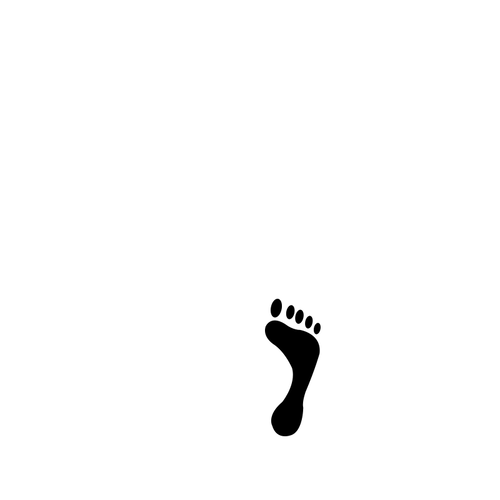

We've all heard the expression:
"Treat others as you want to be treated."
That expression applies to the environment you live in. It holds true that what you put into your
community you will get out of it. If you put in work to make your community a more positive space for its inhabitants, you will see a cleaner and safer place to live.
Our Mission:
Going Green’s mission is to inform Medina County about their impact on climate
change and how they can make the world a greener place. Our website provides visitors with tips and tricks on how individuals can reduce their carbon footprint.

Recycling Tips & Tricks:
- 1) Empty and scrape out the food or materials from all bottles, jars, containers, and cans
before putting it in the recycling bin.
- 2) It is generally preferred to have the plastic cap put back on the empty plastic bottle
or jug before you put it in the recycling bin.
- 3) Recycle all clean paper and all clean and flattened cardboard boxes. If you have time,
please remove all tape and all plastic wrap that might be attached to the cardboard.
- 4) If you have compostable plastics, either throw them in a bin marked for true industrial
compost or throw them in the trash.
- 5) Take all of your used batteries to a recycling facility or store that recycles batteries.
- 6) Take all of your electronics to a SERI certified electronics recycling facility.
- 7) Make sure your bins are properly color coded and have proper lids.
- 8) Don't place hazardous material, food, liquid, styrofoam, and other nonrecyclables in your
recycling stream.
- 9) Recycling one aluminum can saves enough energy to listen to a full album on your iPod.
Recycling 100 cans could light your bedroom for two whole weeks. Sign up for 5 Cans Challenge
to save energy and show off your creative side.
- 10) Americans make more than 200 million tons of garbage each year, enough to fill Busch Stadium
from top to bottom twice a day. Next time you’re at a sporting event or tailgate, host a trash-free
tailgate using only recyclable materials Sign up for Trash-Free Tailgate.
Local Recycling Resources
Medina County uses Single Stream Recycling is a system in which all recyclables (paper, plastics, metals, etc.) are collected
and handled together, instead of being collected and handled separately. The entire process eliminates the need for people to separate their recyclable materials and place them in
separate bins for collection.
Residents of Medina County can bring mercury-containing items, including medical thermometers, mercury
"switches, and liquid mercury for free collection. All unbroken mercury thermometers, and mercury containing devices MUST be sealed inside TWO zip-lock bags,
or a rigid, sealed container, such as a glass jar or plastic bottle prior to leaving your home. Mercury is a silvery liquid, most commonly found inside glass thermometers and thermostat switches.
- How To Get Rid Of Mercury Properly
Bellow are some other resources on how to recycle unique items:
- Bins and Drop Off Places
- Cost Off Unique Item Drop Offs
- More Recycling Information
Local Recycling Centers